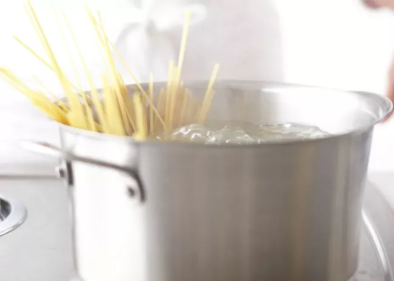

Pasta

Image taken from AllRecipes.
Description
Pasta is a simple dish, requiring few ingredients and having a short cooking time. As such, the wait between the start of preparation to the start of eating is short, and it won't be long until a tasty dish is ready. Pasta is a filling dish with starchy ingredients, or if sides are wanted, a vegetable or meat may be a good addition.
Ingredients
- Dry Pasta
- Salt
- Water
- Optional: Something to top the pasta once cooking is finished. I enjoy grated cheddar cheese, but sauces are the traditional topping.
Steps to Cook
- Choose an appropriately sized pot for the amount of pasta you wish to cook. Fill the pot 2/3 of the way up with water. Add some salt to the water to taste - the water can be tried by dipping a finger into it and seeing if it has any flavor upon licking.
- Put the pot on the stove, and set the stove to high. Let the pot get to a rolling boil.
- Once the water has achieved a rolling boil, pour the amount of pasta to cook into the pot. Keep it boiling until the pasta has achieved the desired hardness to taste.
- Once the pasta has softened to the desired amount, take the pot of pasta and pour the pasta and water through a strainer at your sink.
- The pasta should now be ready to serve. The strainer of pasta may be poured back into the pot if wished, and a serving spoon can be used here to serve the pasta from either the strainer or the pot. If a sauce is to be put over the pasta, this sauce can be poured into the pot full of cooked pasta.